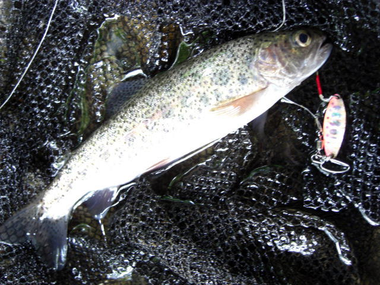
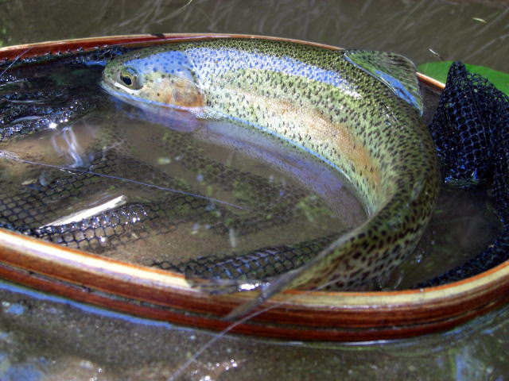
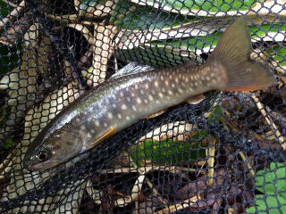
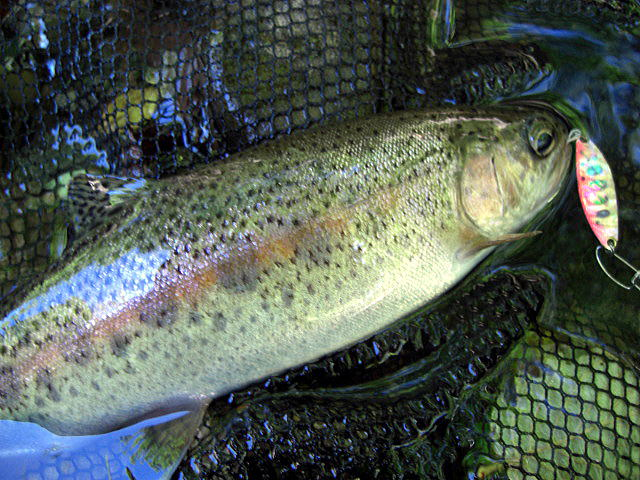
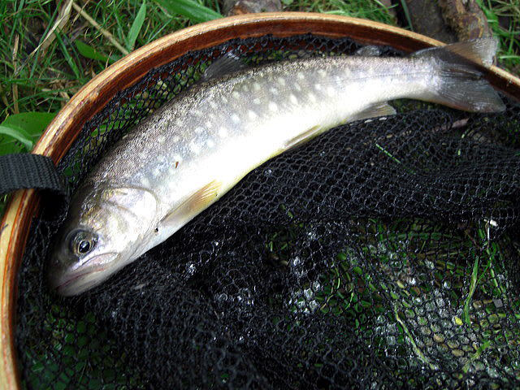
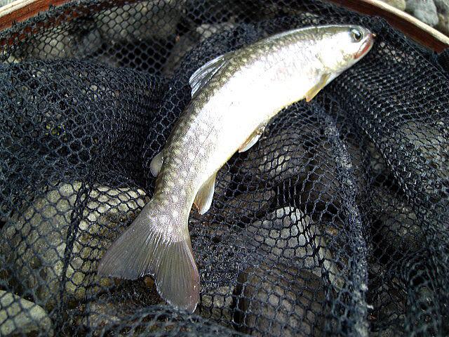
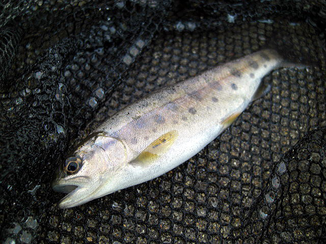
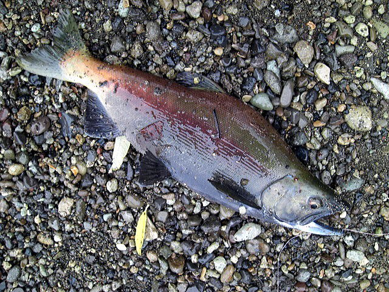

| ２０１５年３月２８日(1) 雨鱒５６センチ。ミノーＤＥＮＳ５センチ７g （KHR URM 上のボサ） |
| ２０１５年３月２８日(2) 雨鱒５６センチ。ミノーＤＥＮＳ５センチ７g （KHR URM 上のボサ） |
| ２０１５年４月２６日 アメマス。ミノーＤＥＮＳ５センチ７g （KSR TURUMHASI） サクラはまだ少し早い |
| ２０１５年４月２９日 イワナ。 （SHOR 支流） 増水のため支流。ダムは濁り酷い |
| ２０１５年４月２９日 （SHOR 支流） 増水のため支流。ダムは濁り酷い |
| ２０１５年５月９日 10：00 ウグイしか釣れない７匹全てウグイ。39センチ （KSRKO OSTB川） |
| ２０１５年５月９日 10：00 ウグイしか釣れない７匹全てウグイ。40センチ （KSRKO OSTB川） |
| ２０１５年５月１０日 アメマス。ミノーＤＥＮＳ５センチ７g （KSR STGNROADHASI） |
| ２０１５年５月１０日 桜鱒５４センチ(1)。ミノーＤＥＮＳ５センチ７g 時期的にまだ早め。 （KSR STGNROADHASI） |
| ２０１５年５月１０日 桜鱒５４センチ(2)。ミノーＤＥＮＳ５センチ７g 時期的にまだ早め。 （KSR STGNROADHASI） |
| ２０１５年５月１０日 桜鱒５４センチ(3)。ミノーＤＥＮＳ５センチ７g 時期的にまだ早め。 （KSR STGNROADHASI） |
 |
| ２０１５年５月２４日 SHOR_DM上の川 ニジマス |
| ２０１５年５月２４日 SHOR_DM上の川 ニジマス |
 |
| ２０１５年５月２４日 SHOR_DM上の川 ニジマス |
| ２０１５年５月３０日 STKR（滝下） ニジマス |
| ２０１５年５月３０日 STKR（滝下） ニジマス |
|  |
| ２０１５年５月３０日 STKR（滝下） ニジマス |
| ２０１５年５月３０日 NNSBT イワナ |
| ２０１５年５月３１日 TSBT ニジマス当日７匹程度 |
| ２０１５年５月３１日 TSBT ニジマス当日７匹程度 |
| ２０１５年５月３１日 TSBT ニジマス３４センチ(1) 当日７匹程度 |
|  |
| ２０１５年５月３１日 TSBT ニジマス３４センチ(2) 当日７匹程度 |
| ２０１５年６月６日 OBRSK イワナ |
| ２０１５年６月６日 MSTR 桜鱒４４センチ ディベロップ5g 赤金 |
| ２０１５年６月１３日 MSTR 山女 |
| ２０１５年６月１３日 MSTR 山女 |
| ２０１５年６月１３日 MSTR イワナ |
| ２０１５年６月１３日 MSTR イワナ |
| ２０１５年６月１３日 AKN 桜鱒３８センチ ディベロップ１０g ヤマメ金 |
| ２０１５年６月１３日 AKN イワナ |
|  |
| ２０１５年６月１４日 MSTR イワナ |
| ２０１５年６月１４日 MSTR ヤマメ |
| ２０１５年６月１４日 MHRR浄水 イワナ |
| ２０１５年６月１４日 MHRR浄水 ヤマメ２０センチ |
| ２０１５年６月１７日 STR ウグイ４２センチ ウグイのみ９匹 |
|  |
| ２０１５年６月２１日 STKR（滝下） ニジマス |
| ２０１５年６月２１日 MSTR アメマス |
| ２０１５年６月２１日 MHRR イワナ |
| ２０１５年６月２７日 SHOR_DM_ヘアピン ニジマス３４センチ |
 |
| ２０１５年６月２７日 SHOR_DM_ヘアピン ニジマス３２センチ |
| ２０１５年６月２７日 SHOR_DM_ヘアピン ニジマス |
| ２０１５年７月５日 STKR（滝下） ニジマス |
| ２０１５年７月１１日SNKSTKRKO エゾヤチウグイ |
| ２０１５年７月１１日SNKSTKR ニジマス １０匹以上 最大３６センチ |
| ２０１５年７月１１日SNKSTKR ニジマス １０匹以上 最大３６センチ |
| ２０１５年７月１２日SHORDM上の川 ニジマス ２０匹以上 エサ釣り |
| ２０１５年７月１８日SNKSTKR 山女 ８匹程度 |
| ２０１５年７月２０日MSTR イワナ １０匹程度 |
| ２０１５年７月２０日MSTR イワナ １０匹程度 |
| ２０１５年７月２０日MSTR アメマス ３３センチ |
| ２０１５年７月２０日 ＡＢＳＲ イワナ |
| ２０１５年８月２日 ＭＳＴＲ イワナ 最大２５センチのイワナ 当日山女含め２０匹程 |
| ２０１５年８月２日 ＨＲＲ イワナ 最大２２センチのイワナ 当日１０匹程 アメマス上っていない |
| ２０１５年８月８日 ＮＫＮＩ 山女２５センチ（１） 当日SRBは一匹も釣れず。 |
| ２０１５年８月８日 ＮＫＮＩ 山女２５センチ（２） |
| ２０１５年８月９日 AKN 虹鱒２３センチ |
| ２０１５年８月１０日 SHOR_DM_ヘアピン 虹鱒 当日２匹のみ |
| ２０１５年８月１２日 OSTBT 虹鱒 (KSRKO坊主） |
| ２０１５年８月１２日 OSTBT 山女 |
 |
| ２０１５年８月１２日 OSBT 雨鱒２９センチ （当日２０匹以上 雨１、他全部岩魚） |
|  |
| ２０１５年８月１２日 OSBT 岩魚２３センチ |
| ２０１５年８月１４日 SINHRR 山女 |
| ２０１５年８月１４日 SINHRR 岩魚 （当日７匹程度） |
| ２０１５年８月１４日 MSTR 雨鱒３２センチ(1) （当日10匹程度） |
| ２０１５年８月１４日 MSTR 雨鱒３２センチ(2) （当日10匹程度） |
| ２０１５年８月１６日 OSBT 岩魚 （当日OSBT 30匹、NMOR 8匹、NKC11匹 合計５時間で４９匹） |
| ２０１５年８月１６日 OSBT 岩魚 |
| ２０１５年８月１６日 OSBT 山女 |
| ２０１５年８月１６日 NMOR 岩魚 |
| ２０１５年８月１６日 NKC 岩魚 |
| ２０１５年８月１６日 NKC 虹鱒 |
| ２０１５年８月１６日 NKC 虹鱒 |
| ２０１５年８月２２日 NKC 虹鱒 当日５０分で７匹 |
| ２０１５年８月２２日 NKC 岩魚 当日５０分で７匹 |
| ２０１５年８月２２日 HRR 雨鱒 尺 当日５匹 |
|  |
| ２０１５年８月２３日 MSTR最上流 岩魚 （当日7匹程度） |
| ２０１５年８月２９日 NKC 岩魚２３センチ 当日１５匹 |
| ２０１５年９月５日 NKC上流 虹鱒 当日１５匹 |
| ２０１５年９月５日 NKC上流 虹鱒２３センチ 当日１５匹 |
| ２０１５年９月５日 ＯＳＢＴ 雨鱒３３センチ 当日５匹 |
| ２０１５年９月１３日 CHR 雨鱒３６センチ 当日２匹 |
| ２０１５年９月１３日 CHR 雨鱒２５センチ 当日２匹 |
 |
| ２０１５年９月２０日 KSRKO まだ姫鱒は岸にいない ウグイのみ |
| ２０１５年９月２１日 OSTBT 日の出ではインレット右の深みで５センチミノーで虹鱒が釣れた |
| ２０１５年９月２１日 MSTRSR ぶなっている桜鱒をバラス |
| ２０１５年１０月１０日 NKC 岩魚 当日８匹程度 あまり釣れない |
|  |
| ２０１５年１０月１２日 MSTR 山女 当日１匹 |
| ２０１５年１０月１７日 CHR TNTK 雨鱒３１センチ |
| ２０１５年１０月１７日 NUIBT 親子の足跡あり |
| ２０１５年１０月１７日 NUIBT 雨鱒 |
| ２０１５年１１月８日 KSRKO 姫鱒 今年はあまり多くない（当日３匹） |
|  |
| ２０１５年１１月８日 KSRKO 姫鱒 今年はあまり多くない（当日３匹） |
| ２０１５年１２月２６日 STR ２０１５年釣り納め |
| ２０１５年１２月２６日 STR 雨鱒４０センチ。ミノーＤＥＮＳ５センチ７g スプーンの反応が悪い |
 |
| ２０１５年１２月２６日 STR 雨鱒３８センチ。ミノーＤＥＮＳ５センチ７g |
| ２０１５年１２月２６日 STR 雨鱒３７センチ。ミノーＤＥＮＳ５センチ７g |